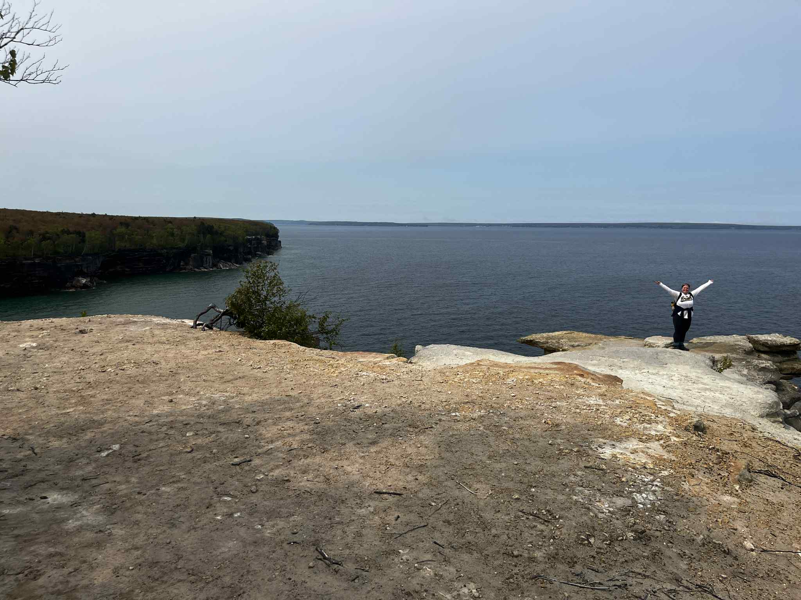

Outside of research
About me
I found my love for mathematics and the structure it provides during my undergraduate studies at Hobart and William Smith Colleges (HWS) in Geneva, NY. As a pre-med student going into college, I was taking math classes as my elective second major because I enjoyed them but they soon became my favorite parts of the day. After graduating, I took a year as the Math Intern at HWS and then began my journey as a Ph.D. student at the University of Notre Dame in South Bend, IN. Being in an Applied and Computational Mathematics and Statistics program and my research in numerical analysis allows me to pursue my passion of mathematics while still tying it back to my pre-med/biology roots through cool applications.
Beyond the mathematics, here's a little more about who I am.

Hobbies & interests
I have a multitude of hobbies that I switch between pretty often including watercolor painting, reading, hiking, pickleball, baking, and I keep telling myself I will learn how to crochet. I also love to try new foods and visit new places. I hated history class growing up, but I love learning about history and different cultures now that I can do it without being graded.
Travel & places
I love to travel. I first caught the travel bug when I studied abroad in Copenhagen, Denmark during my undergraduate. Now I try to do a trip every year if possible with my last one being to Croatia.

A few other things
As much as I love my hobbies and traveling, I also love to just spend time at home cuddled on my couch with my dog, Remy.